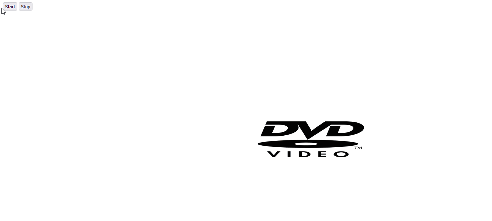

Mind Manager application is Capstone application I participated in in the last semester of my studies in George Brown College. It is a mobile app runs on Android and IOS mobile devices. The application is designed to provide the user suggestions and activities according to their current mood and feelings. The user can choose a certain mood or find out what they are feeling. If the user is not certain how they feel, they can always choose to take a small fun quiestionare to determine their mood and based on it they would get appropriate suggestions.
The activities that can be suggested are in varied fields: Books, Music, Movies, Games and more. Once the software knows how they feel, then suitable activities will be offered to them in these fields mentioned. The suggestions are random, therefore the user won't always like their results so he or she will be able to refresh the option to get a better results to their likings. Assuming that the application will expand in the future, the user will have the option to save his favourite options and the software will learn it and suggest similar activities to them.
Creating an account is additional option for the user. It will give them the flexibility to save suggestions they like as mentioned above and the app will be able to give the user similar suggestions to their likings. For instance, if a user enjoyed a Pop-music genre in the past, the app will make sure they will be suggested again with a Pop-music genre. However if the user does not create an accont, they can refresh the suggestions to a differnet random set of suggestions.
- Project was built over the Android Studio and Xcode IDE
- Programming languages were primarily in Java and Swift for the Android and IOS systems
- Used SQL based main database system
As a group project I was involved in all major aspects of the project. From the decision taking of the project, the coding of software and user interfaces. In addition I was heavily involved in creating the database functionality.
Below is a listing of the documents of Mind Manager App.
This project was development in React Native during my course at George Brown College. It has basic functionality working with API weather to give the current weather patterns in city of Toronto. Also, it gives the temperature in fahrenheit or Celsius, "feels like", humidity and icons that changes respectively.
-Project was built using Visual Studio Code IDE and Node JS
-Used Javascript
-Use of the openweather.org information repository and its require api keys
-Axios library was used for the purposes of data retrieval
This project was developed in Angular platform during my course at George Brown College. Designed to work with API "Space Rockets" to give detailed data about rocket missions that were sent to space.
-Project was built using Visual Studio Code IDE NodeJS and Angular
-GraphQL library was used for the purposes of data retrieval
-Data was taken from "api.spacexdata.com"
A classic DvD multicolour screensaver tool. It was made as a small personal exercise, It was an inspiration from the old DvDs screensaver of the 21s. A moving image that changes colours and direction on reaching screen edge.

- Project was built using Vanilla Javascript